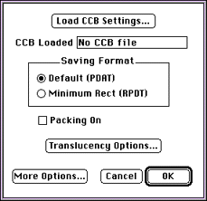
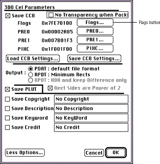
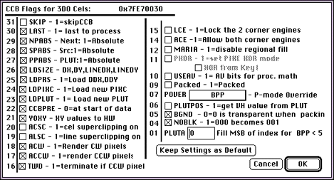

You'll want most cels to be the shape of the object that moves on the
screen, and not simply rectangular. This section steps you through
creating a packed and an unpacked irregularly shaped cel. Both processes
work by using a special background color that will then become transparent
when the cel is displayed via the 3DO system.
Note: When creating a packed irregularly shaped cel, you can use a
background color of your choice. When creating an unpacked irregularly
shaped cel, you have to use black as a background color and have to change
all black to almost black.
Before you can create an irregularly shaped cel, you need a rectangular
cel to start with. Follow the steps in Creating a simple coded cel to create an
8-bit coded cel.
After you have prepared the cel, you need to make the area around the cel
object (the background) transparent.
To fill the background with the background color, follow these steps:
1. Follow these steps to tear off the paint palette (see Figure 1):
Point to the color patch that displays the current paint palette color.
Position the pointer at the edge of the palette.
Drag the palette to the desired location on the screen.
Figure 1: 3DO Animator tear-off palette.
2. Find a color in the palette that is not in the document by clicking on
colors in the tear-off palette.
If a color you click in the paint palette flashes in the cel, it is
being used and you should select another color. For this to work, you
should be using an 8-bit cel.
Note: The flashing does not currently work on all monitor
types.
3. Once you've selected a color in the paint palette that is not being
used, click in the background area using the Magic Wand tool.
4. Select the Fill tool (paint bucket) and click in the background area.
The background color fills the selected background area and appears as
the current color in the paint palette color patch.
5. In the Set 3DO Object Type dialog, select the Background Color box.
Select the Color Picker tool (eye dropper) and click the background area.
The color appears in the Background Color box. When you later save the
cel, all pixels in the background color are marked as transparent, and
displayed as transparent if the CCB flags are set correctly (discussed in
the next section).
Using a special background color to create an irregularly shaped cel only
works for a packed cel. This section steps you through setting the cel
control block (CCB) flags to work with the background color.
From the 3DO Options menu, select Set CCB.
The Load CCB Settings dialog is displayed.

Figure 2: Load CCB Settings dialog.
Note: If there are CCB settings you want to copy from another file,
click the Load CCB Settings button and select the file from the dialog
that appears. Click OK to complete the transfer.
Select the Packing On box, then choose OK.
The cel is now saved in packed format.
Creating an unpacked, irregularly shaped cel
An unpacked, irregularly shaped cel takes advantage of the 3DO hardware's
ability to make black (RGB 0-0-0) pixels transparent, provided certain CCB
flags are set.
If you use this feature, you can't have black (RGB 0-0-0) as part of the
cel itself, because black pixels in the cel will also become transparent,
and your cel will have holes.
About this section
This section first steps you through creating an unpacked irregularly
shaped cel by explaining the following procedures:
Since you will save the irregularly shaped, unpacked cel using flag
settings that make black (RGB 0-0-0) pixels transparent, you need to
replace all black pixels in the cel with almost black (RGB 0-0-8). This
prevents the cel from having unwanted transparent areas.
To create a cel with no black, follow these steps:
Position the tear-off paint palette at a convenient place on the
screen, as explained above.
Click on colors in the top row of the paint palette that appear to be
black (RGB 0-0-0 through RGB 0-0-7) and note which shades between 0-0-0
and 0-0-7 are included.
The RGB values of the selected color appear beneath the color bars on
the Set 3DO Object Type dialog.
From the Color menu, choose Replace Colors.
The Replace Colors dialog appears.
Click the 0-0-0 color in the paint palette.
It is moved into the first box in the Old: color grid in the Replace
Colors dialog.
Click the first box in the New color grid in the Replace Colors
dialog, then click on the RGB 0-0-8 color in the paint palette.
Click "Replace old with new," making sure you select All the Frames if
you are working with an animation.
Repeat steps 5 and 6 replacing colors ranging from RGB 0-0-1 to RGB
0-0-7 with RGB 0-0-8.
To take advantage of the hardware facility of displaying black (RGB 0-0-0)
pixels as transparent, you have to create a black background that will
form a transparent mask. Follow these steps:
Click on black in the paint palette to make it the current color.
Black appears in the palette color patch and defines it as the fill
color.
Select the background with the Magic Wand tool.
Fill the background with the Fill tool (paint bucket).
The final step in creating an irregularly shaped, unpacked cel is to set
the appropriate CCB flags. The CCB flags inform the 3DO hardware of the
settings for the cel.
From the 3DO Options menu, select Set CCB.
The Load CCB Settings dialog appears.
Figure 3: The Load CCB Settings dialog.
Make sure that Packing On is not checked.
Click the More Options button.
The 3DO Cel Parameters dialog appears.
Click the Flags button near the top of the dialog.

Figure 4 : 3DO Cel Parameters dialog
In the CCB Flags dialog that appears, check BGND-allows setting of the
NOBLK flag- and NOBLK-makes black pixels in the cel transparent.

Figure 5: CCB Flags dialog.
Note: Packed must be off (no x) for this procedure to be
successful.